Welcome to the incredible world of Oz. There is much to know about this wonderful land, and on these pages I hope to tell you a lot about it, and help you find out where to find out more. Oz first started as a book, which grew into an entire series of books. They were first written by one man, but others wrote more books after him, and more books are being added to the series even now. There have also been many movies (maybe you've seen one of them on television?), plays, television productions and videotapes, toys, games, dolls, clothes, conventions, clubs, and an international fan following. I hope all Oz fans and those who want to learn more can find something they like here. Just scroll down to see what I have made available for you.
This site is maintained by me, Eric Gjovaag, and is a continuous work-in-progress. Therefore, I will be changing and adding things all the time. Please keep coming by to see what I've done.
All material on this site and the code to create it are copyright © 1996, 1997, 1998, 1999, 2000, 2001 Eric Gjovaag. All rights reserved.
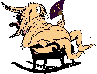
Who wrote the Oz books? What was Dorothy's last name? Can you really see a man hanging himself in the movie? These and many, many other questions are answered here, in an extremely comprehensive list of Frequently Asked Questions (FAQ) about The Wizard of Oz -- and their answers as well. If you have an Oz question, this is the place to look first!
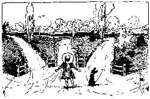
Here you can find other Wizard of Oz and related websites that I have found and that I hope you will enjoy. If your question isn't answered in the question-and-answer section above, maybe someone else has an answer for you here. Click on the picture to visit some of them. This is also the place to look for sites devoted to Oz pictures, Oz sounds, Oz shopping, Oz personal pages, Oz fun, online Oz books...
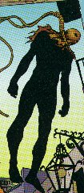
Far and away, this is the most frequently asked question I get from those who view this page: Is there a man (or Munchkin) hanging himself in the background in the movie? In fact, I got so sick and tired of answering this question that I wrote my FAQ and set up this website mostly so I wouldn't have to explain it all the time! Yet even though the answer is readily available here on my website, people continue to ask me. Many were the days when I had more than one note asking me about this in my e-mail inbox. Well, to satisfy all of you who have sought out this website just to ask me this question, I plan on setting up a page devoted entirely to answering this question in the near future, with screen grabs and lots of other information. Until then, however, this link to the question and answer in my FAQ will have to do. For other points of view, you can check out any of the links listed below.
Since I feel that these links adequately answer the question, any e-mails pertaining to this topic will no longer be answered.
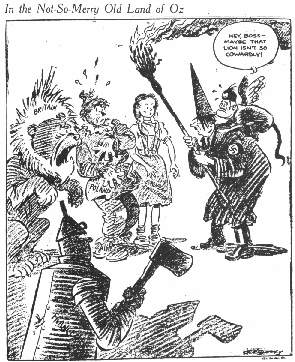
Now that the issue of the hanging man has been dealt with, this is the next biggest question I get asked about -- what is the meaning behind The Wizard of Oz? Is it a fantasy quest where the goal is to get out of the fantasy? Is it a search for courage, intelligence, and passion, or a search for the true self? Is it the story of fraudulent politics in a media age, or a coming of age story where a girl finds her real power in her shoes? Is it the story of incomplete men in a post-feminist age, or a quest for home, for wholeness, for magic -- things we already have but just don't see? The most gripping answer, which most people seem to have heard about, seems to be that Baum wrote it as some sort of political manifesto -- except no one can agree as to which turn-of-the-century politics the story is talking about! The answers, such as they are, are here in this website, but until I can create a page devoted to the many, many different interpretations of the story (none of which, I might add, can be considered the "true" meaning), these links will have to do.
Any e-mails I now receive dealing with this topic will not be answered.
And in case you were wondering about the above cartoon, it's considered to be the very first cartoon to use the characters from The Movie in a political context. The Tin Woodman is France, the Cowardly Lion is Great Britain, the Scarecrow is Poland, Dorothy is European Civilization, the Wicked Witch is Adolf Hitler, and the Winged Monkey is Benito Mussolini. The Monkey is saying, "Hey, Boss -- Maybe that lion isn't so cowardly!"
The long list of interpretive questions above is taken from an episode of the radio show Connections, copyright © 1998 WBUR, Boston, Massachusetts
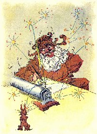
All the latest news about Oz, updated whenever there is something to add. News is archived for the past six months.
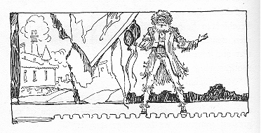
Wizard of Oz performances and other events are held all over the world. Go here for a listing and more information on many of them, including television broadcasts.
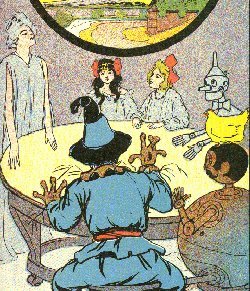
There is now an electronic mailing list devoted to all things Ozzy. Go here to find out more, and how to join.
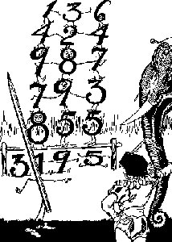
For teachers of all subjects and levels, here are some ideas for incorporating Oz into your classes. (Students can always let their teachers know about this part of the website, too...)
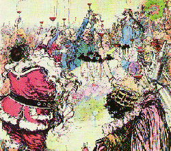
Want to host an Oz party? This page will give you some ideas of what to do, plus help you find party supplies and favors.

Want to ask questions, or post a note on some Ozzy subject? This is the place to go to see what's on the minds of Oz fans. (Please note that this page is hosted on another site, and contains some advertisements.)
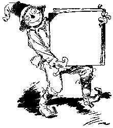
Now open! You can buy many Oz books and other Ozzy items here, and go straight to sources for other merchandise.
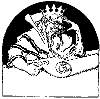
Reviews of all kinds of Ozzy merchandise. See what the users of this site recommend.
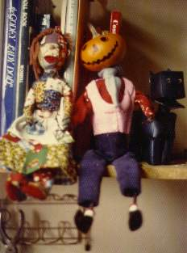
One-of-a-kind handmade dolls of many, many Oz characters are available for sale here.
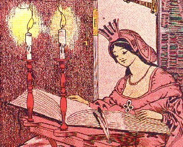
All about me, why I have this site, and other things you might want to know.
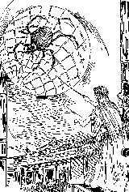
 | Skip Previous Ozzy Site Previous Ozzy Site Next Ozzy Site Skip Next Ozzy Site Next 5 Ozzy Sites Random Ozzy Site List all the Ozzy Sites in this Web Ring Search the Oz Web Ring |

   |
|
[ Previous 5 Sites | Skip Previous | Previous | Next | Skip Next | Next 5 Sites | Random Site | List Sites ] |

 | Children's Literature Ring [Skip Previous] [Previous] [Next] [Skip Next] [Next 5] [Random] [List Sites] [Join Ring] |  |
 |
This FantasyWeb site is owned by Eric Gjovaag | |
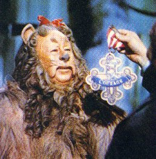
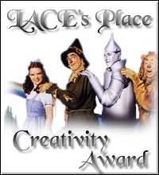


 Links2Go Key Resource Wizard of Oz Topic |
and the March 20, 2000 issue of
The Cincinnati Post
and the January 29, 2001 issue of
The Seattle Post-Intelligencer
[Article 1] [Article 2]
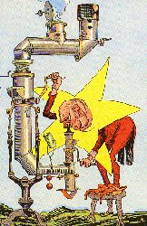
This website is registered on the following search engines. Please feel free to check them out for your other World Wide Web needs.